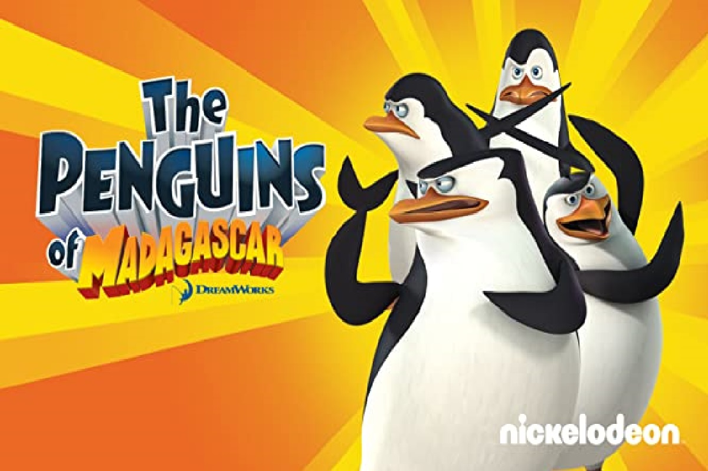
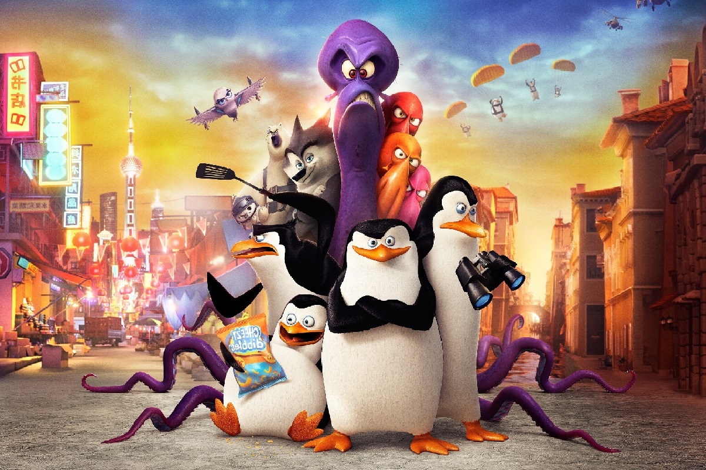

SERIAL:

Fabuła serialu:
Akcja serialu "Pingwiny z Madagaskaru" rozgrywa się po wydarzeniach z filmu "Madagaskar 3". Członkowie „Cyrku Zaragozza” postanowili zakończyć podróżowanie po świecie i na stałe osiedlić się w Nowym Jorku w „Zoo w Cental Parku” i tam przedstawiać swoje pokazy cyrkowe. Cyrkowcy są zajęci swoimi pokazami i dlatego Alex, Gloria, Melman, Marty i inni z „Madagaskaru 3” nie są pokazywani. Natomiast Skipper i jego odział oraz Król Julian i jego lemury rezygnują z pracy w Cyrku i normalnie żyją w Zoo z innymi. Skipper, Kowalski, Rico i Szeregowy tworzą niezrównaną bandę pingwinów-komandosów, którzy po zamieszkaniu w zoo, w nowojorskim Central Parku, strzegą porządku wśród zwierzęcych mieszkańców. Każdy z nich ma inne zdolności pozwalające wykaraskać się z najgorszej sytuacji. W każdym odcinku przeżywają nowe przygody, ale i pakują się w nowe tarapaty.
Obsada serialu w wersji oryginalnej:
Tom McGrath – Skipper
Jeff Bennett – Kowalski
John DiMaggio – Rico
James Patrick Stewart – Szeregowy
Danny Jacobs – Król Julian
Kevin Michael Richardson – Maurice
Andy Richter – Mort
Nicole Sullivan – Marlenka
Obsada serialu w wersji polskiej:
Grzegorz Pawlak – Skipper
Jacek Lenartowicz – Kowalski
Janusz Zadura – Rico
Tomasz Steciuk – Szeregowy
Jarosław Boberek – Król Julian
Wojciech Paszkowski – Maurice
Tomasz Bednarek – Mort< br>
Monika Kwiatkowska – Marlenka
Informacje o serialu:
Liczba serii – 3
Liczba odcinków – 149
Produkcja – DreamWorks
Reżyseria: Bret Haaland i Nick Fillippi
Lata emiski: 2008-2015
Format obrazu: 16:9
FILM:
Z powodu dużego sukcesu serialu, producenci wydali film "Pingwiny z Madagaskaru" w 2014 roku, gdzie głowną rolę grał szeregowy.
Kliknij tu by zobaczyć zwiastun.

Fabuła filmu:
Oddział Skippera ucieka z cyrku. Okazuje się, że Szeregowy ma mieć urodziny. Skipper chce zrobić dla niego prezent. Udają się do jednego z najbardziej tajemniczych miejsc Ameryki – Fort Knoxu, gdzie są trzymane rządowe rezerwy złota. Jednak to nie złoto, ale leżący w jednym z pomieszczeń ostatni w USA automat z Chrupsami deserowymi, jest ich celem. Kiedy Szeregowy chce ich spróbować, okazuje się, że prezent ciągnie za sobą wielkiego wroga, ośmiornice. Jedna ze ośmiornic Dave'a (Oktawiusza Mackiewicza) porywa pingwiny do bazy złego geniusza, która to płynie do Wenecji. Wspomina on wszystkie zoo w których 'słodkie pingwiny' pozbawiały go fanów. Nagle pingwiny uciekają. Poddani Dave'a zaczynają ich gonić, wtedy pingwiny wskakują na gondole , po kilku manewrach ośmiornice dorwały pingwiny, ale ptaki uratował oddział Wiatr Północy. Gdy lecieli samolotem do bazy Utajniony tłumaczył, czym jest Wiatr Północy Skipper słuchał i lekceważył co mówi jedząc chrupsy deserowe. Gdy dolecieli do bazy Wiatru Północy Skipper spytał co znaczy NW, a Utajniony odpowiedział ,,Znaczy nie wiem". Kiedy wylądowali Wiatr Północy zadawał im pytania. Kiedy pingwiny powiedziały że Mackiewicz to ośmiornica zdziwiony Utajniony po cichu powiedział ,,Uwolnić owcę". Gdy pingwiny zaczęły szaleć po bazie, Utajniony strzelił każdego w plecy strzałkami usypiającymi i wysłał na Madagaskar.
Gdy byli w samolocie wyskoczyli z pudła, a potem z samolotu. Rozbijali się po innych samolotach, aż w końcu nadmuchali w locie trampolinę i wylądowali na niej. Potem przez pewien czas skakali na trampolinie. Potem poszli do miasta – Szanghaju, chociaż myśleli że to Irlandia. W tym samym czasie ośmiornice porywały pingwiny z całego świata. Po pewnym czasie odział domyślił się że są w Szanghaju, i że to pingwiny-syrenki są następnym celem. Tam pingwiny próbowały uratować unikalne syrenki, ale w czasie operacji – zresztą nieudanej – stracili Szeregowego. Wkroczył do akcji Wiatr Północy, któremu pingwiny skradły samolot.
Po nieudanej próbie gonili statek Dave'a, który zwiał razem z grupą syrenek i Szeregowym. Pingwiny zniszczyły samolot NW, a następnie pływały po jego resztce. Do nich przyczepiony był ponton Wiatru Północy. Po kilku dniach znaleźli wyspę, na której były ośmiornice. Pingwiny odwróciły uwagę ośmiornic, a Wiatr Północy zaatakował łódź, jednak jego członkowie przegrali. Skipper, Kowalski i Rico poddali się i, podobnie jak reszta uwięzionych pingwinów zostali zamienieni w potwory. Szeregowy tymczasem się ukrywał na łodzi. Gdy dotarli do Nowego Yorku, przebrany za człowieka Dave wypuścił pingwiny na wolność, a przestraszeni ludzie wezwali dezynsektatorów. Zanim pingwiny zostały wyłapane, Szeregowy, który się schował, użył swojej urody do tego, by laser wroga zamienił wszystkie pingwiny w siebie, w tym swoich kolegów, którzy, mimo zamiany wyglądu, nie stracili umysłu. Operacja zakończyła się sukcesem, a Dave został uwięziony w szklanej kuli ze śniegiem (jednej z jego kolekcji). Szeregowemu wyrosły rogi, a pióra stały się fioletowe. Konkurencyjny oddział NW docenił zaś kompanię Skippera i podarował dawnym konkurentom plecaki odrzutowe.
Obsada filmu w wersji oryginalnej:
Tom McGrath – Skipper
Chris Miller – Kowalski
Conrad Vernon – Rico
Christopher Knights – Szeregowy
Benedict Cumberbatch – Agent Utajniony
John Malkovich – Dave
Ken Jeong – Detonator
Annet Mahendru – Ewa
Peter Stormare – Kapral
Danny Jacobs – Król Julian
Andy Richter – Mort
Obsada filmu w wersji polskiej:
Grzegorz Pawlak - Skipper
Jacek Lenartowicz - Kowalski
Janusz Zadura - Rico
Tomasz Steciuk - Szeregowy
Waldemar Barwiński - Agent Utajniony
Krzysztof Dracz - Dave
Robert Rozmus - Detonator
Michał Piela - Kapral
Jarosław Boberek - Król Julian
Tomasz Bednarek - Mort
Informacje o filmie:
Czas trwania - 92 minuty
Produkcja: Mark Swift, Lara Breay, Tripp Hudson
Reżyseria: Eric Darnell, Simon J. Smith
Scenariusz: Michael Colton, John Aboud, Brandon Sawyer
Muzyka - Lorne Balfe
Rok produkcji - 2014